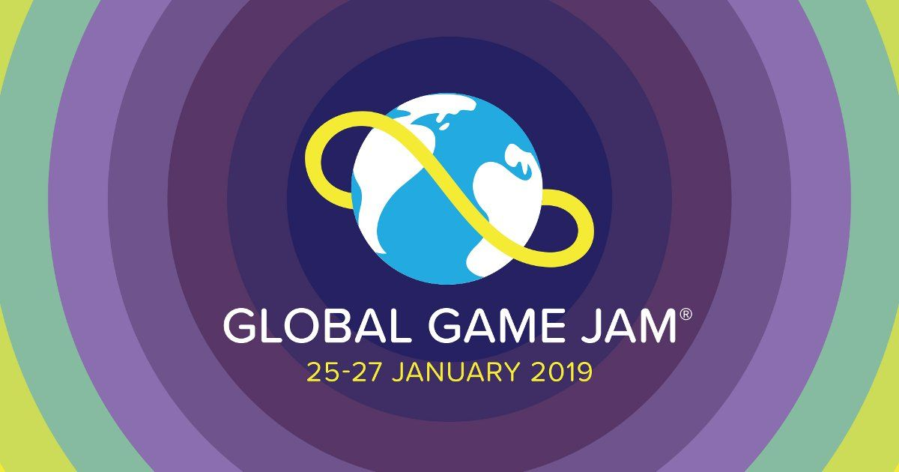
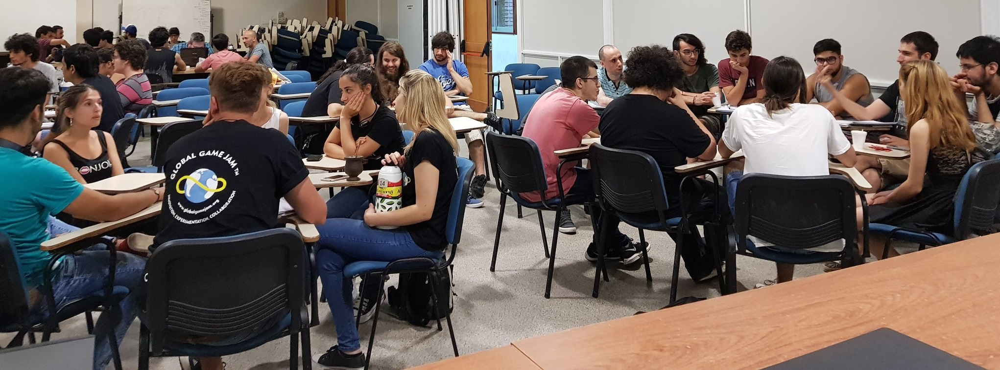
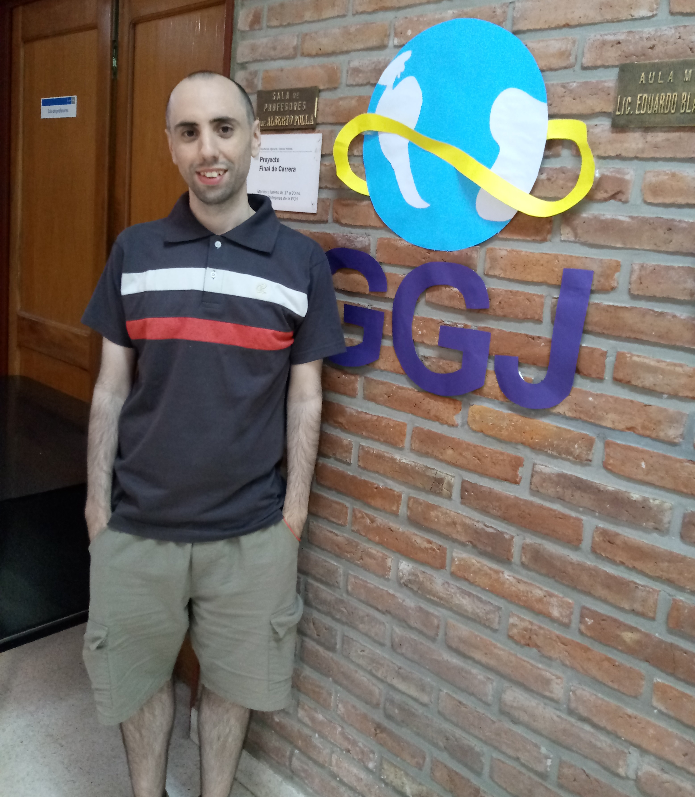
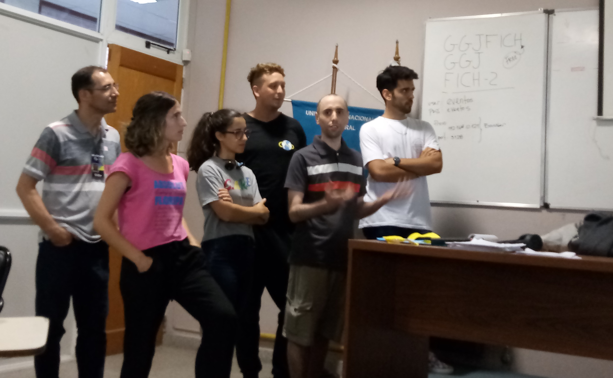

Before the Jam
This was my first time attending this event, and I was filled with questions. Should I had a premade group? What if I don’t find a team? Would this be a competitive, structured environment? And after arriving, I found the complete opposite: a warm, kind meetup with people eager to help and collaborate to create games. Networking and socialising happened everywhere and anytime.
Spoiler alert. I had a fantastic time!

The GGJ
The event started with an introduction of the organisers, and from representatives from UNL FICH, the University acting as a venue. After the theme reveal (What does home mean to you?), we started approaching people near to were each of us was sitting, regardless of our specialty (developing, design, art, music, and so on).
I started on the largest group, of nearly 16 people, which had six developers included myself. It is not needed to say that brainstorming and coordinating such group was a nontrivial task, as many of us were newcomers to the GGJ.

It was there when one of the co-organisers -who also happens to teach at the BsC of Game Design & Development- approached to tell us that some smaller groups may require more people. After deliberating what to do, I asked him if anyone was in need of a junior programmer eager to learn. Minutes later, I moved to my new group.
Introductions went by, and everyone shared their current thoughts with me: they had two main ideas and were even considering creating two different games in case they could not reach an agreement. As more discussion took place, I immersed myself on the proposal and contributed several ideas about mechanics.
As the spirit of the GGJ was collaborating, we emphasised the brainstorming once again and merged both games into one. Finally, it was time to jam.
Jamming & Rushing
Construct2 was the chosen engine, with a single person of the group using it before. It piqued my curiosity: learning a new engine through the madness of the GGJ was inevitably going to be a one-of-a-kind experience. However, we all agreed that its simple interface and straightforward tools would allow us to obtain a more finished product in the 48 hours of the jam.
First, we started planning and writing down the main tasks: fundamental mechanics, objectives, art and visual style, music ideas, and so on. We divided them according to group member’s preferences and the priority of the task. After that, it was developing and building continuously, pair programming even, but always was a group thing, even though each of us had specific tasks. We discussed ideas, asked questions and taught us new things to each other. When anyone became stuck, we were all there to help that person.
Time went by while I was prototyping mechanics and learning to use Construct2 all at the same time. I peaked around at visual art and even offered my thoughts on the music of the game. After a well-received pizza, I had all the mechanics prototyped by midnight, while the art was also on its way.
Saturday found me programming the single level, but that night -after astounding 2.5 hours of sleep- I was woken up at 4 am to be told that the level was too short. Apparently, that was the bedtime discussion of my teammates. Back to the laptop, I designed the last part of the level.
Sunrise happened at some point during our attempts to integrate everything we were doing, as several blackouts (it was pouring outside the first two days) and a lacking wifi forbid us of using GitHub or any cloud-based version-control. We had lunch while fixing last-minute bugs, and testing the gameplay.

Our Game: Lux Domi
The game we developed is named Lux Domi. You can read more about how we interpreted the meaning of “home” on its project page, so I will not get into those details here. However, I need to say that the result was far more amazing than what I expected before starting to work, and I feel proud of it. I am proud of my team, of the obstacles we overcame, of what we learned, and how we managed to include everyone’s ideas.
Our game was the first one being introduced on the GGJ closure event. Here are some links:

Final Thoughts
After all the stress, the adrenaline of coding non-stop, and the sleep deprivation, I can say that it was an incredible experience and event. I can only rate it five-starts and will-attend-again. If anyone reading this is wondering whether they should attend, my answer is straightforward: go, and do not worry if you are a junior like I am/was.
I want to thank everyone that made the GGJ possible: from the local co-organisers, our venue, to global organisations, sponsors and founders. GGJ is that kind of event that not only improves your game development expertise, but it also makes you grow as a person. And for that, I can say that collaborating, networking, and obtaining a game that I am so proud of was the most rewarding high note.